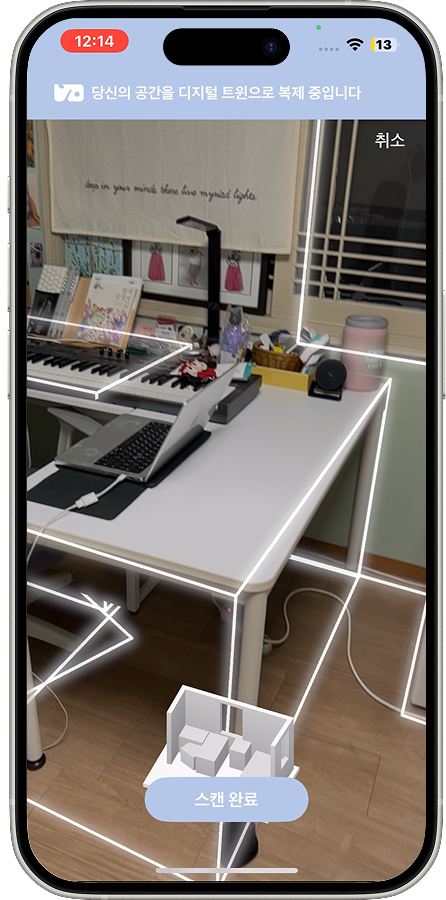
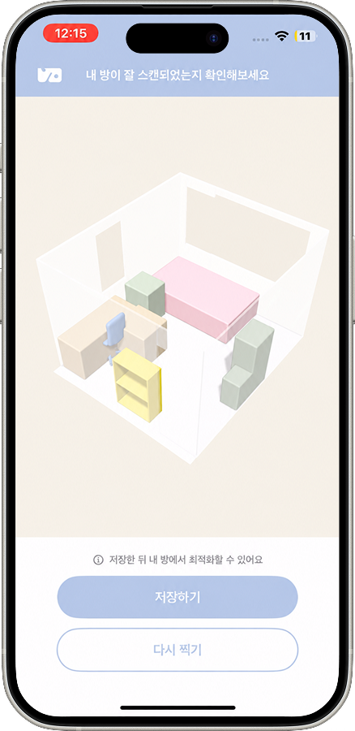
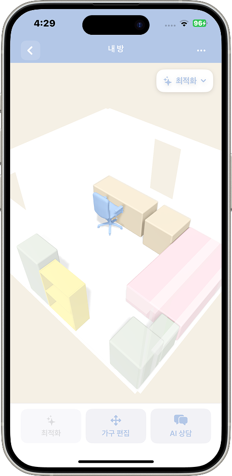
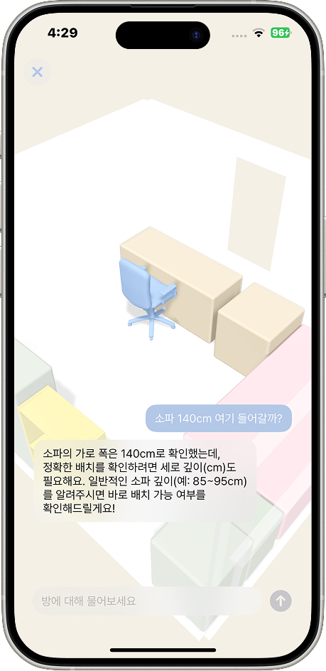
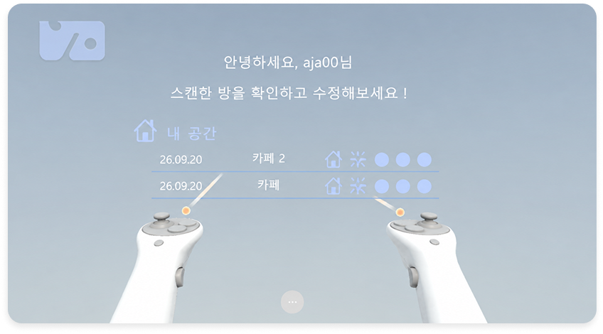
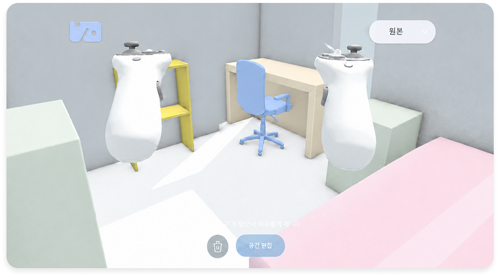
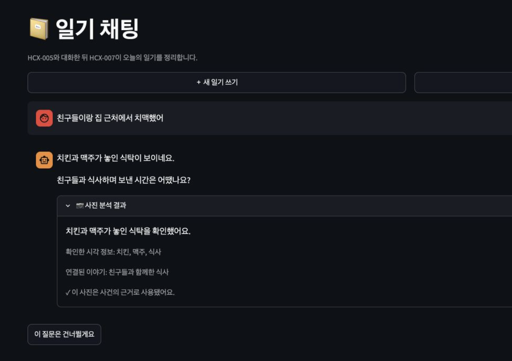
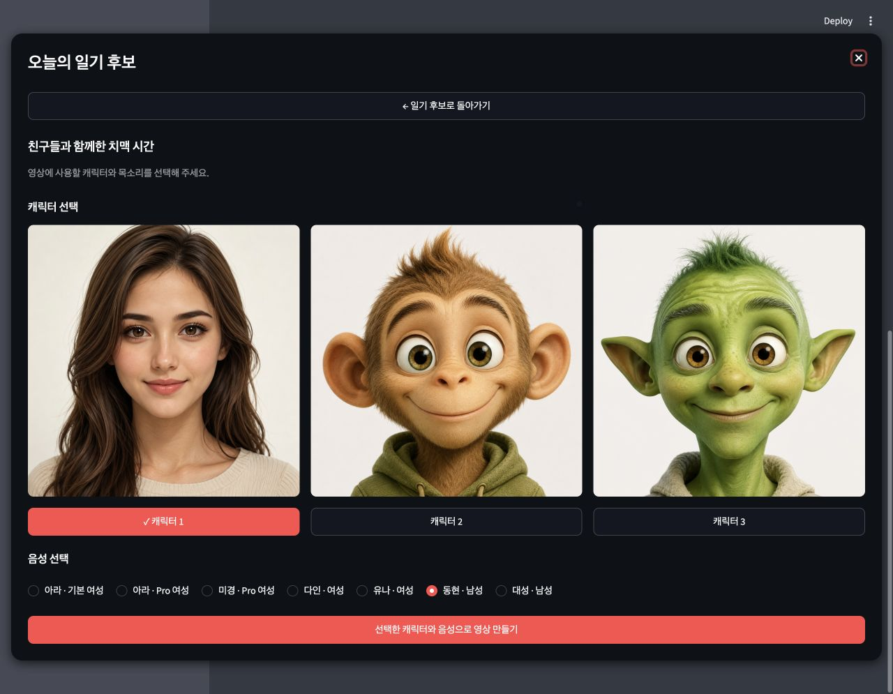
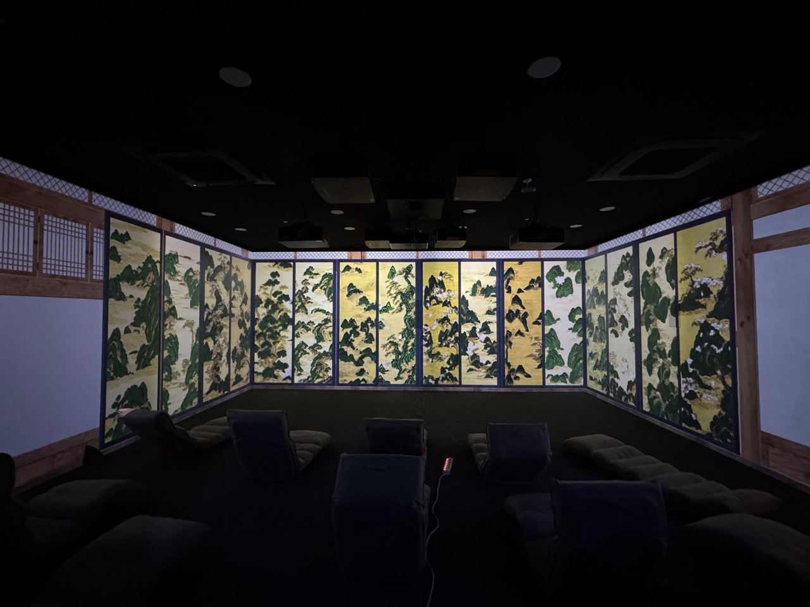
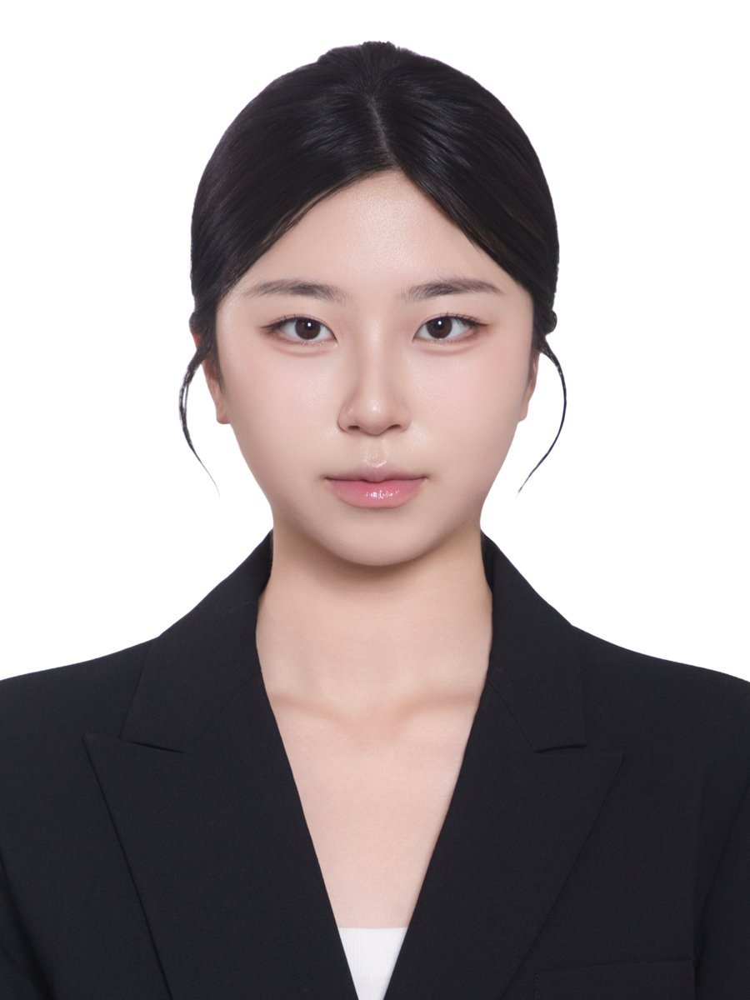

KWON YEWON
AI 시스템을 만들고, 그 답의 근거를 탐구합니다.
Knowledge Graph · GraphRAG · Retrieval · LLM Systems · Evaluation
Projects
Projects
V-O
iOS 공간 스캔 데이터를 최적화해 VR에서 조회·편집할 수 있게 연결한 공간 분석 플랫폼 (졸업 프로젝트)
진행 중
+
V-O
iOS 공간 스캔 데이터를 최적화해 VR에서 조회·편집할 수 있게 연결한 공간 분석 플랫폼 (졸업 프로젝트)






- Period
- 2026.03 –
- Stack
- Python · FastAPI · AWS (EC2, RDS, S3) · PostgreSQL
- My part
-
- FastAPI 백엔드 API 구현 — S3 기반 공간 데이터 저장, 버전 · 처리 상태 관리
- AWS 인프라 구성과 운영 — EC2 · RDS · S3 기반 서버, 최적화 파이프라인 EC2 통합
- 가구 배치 최적화 로직 구현 — 평면 분석 기반 배치 원칙 추출, 최적화 연산
- GitHub Flow 브랜치 전략, PR 협업, GitHub Actions 자동 배포 운영
- 건축 설계 기준 문서에서 배치 규칙을 추출하는 RAG 파이프라인 로컬 구현 중
- Point
- Step Functions + ECS Fargate로 분리돼 있던 최적화 실행을 EC2로 통합 → 관리 리소스 5종 → EC2 1대, 로그 하나로 요청부터 완료까지 추적
Mediary
채팅으로 하루를 기록하고 기억으로 연결하는 개인 맞춤형 AI 아바타 일기 서비스
완료
+
Mediary
채팅으로 하루를 기록하고 기억으로 연결하는 개인 맞춤형 AI 아바타 일기 서비스


- Period
- 2026.07 – 2026.08
- Stack
- Python · FastAPI · PostgreSQL (pgvector) · CLOVA Studio · Streamlit
- My part
-
- 일기 챗봇 파이프라인 — 텍스트 · 사진 · 음성 입력 처리와 CLOVA Studio 대화, 일기 생성 흐름 연결
- 일기 품질 규칙과 확인 단계 — 원문 근거 기반 감정 반영, 사람 · 장소 · 감정 정보 확인을 백엔드 로직으로 구성
- 일기 버전 · 승인 흐름 — 후보 생성, 선택, 확정, 승인본 저장, DB 연동
- Point
- LLM JSON 필드 누락으로 API 중단 → 스키마 검증 · 복구 처리 추가, 추출은 모델 · 판단은 백엔드로 역할 분리
FingerType
웹캠 · 동영상에서 ASL 알파벳을 인식해 텍스트로 변환하는 웹 앱
완료
+
FingerType
웹캠 · 동영상에서 ASL 알파벳을 인식해 텍스트로 변환하는 웹 앱
 IMAGE — img/fingertype.png
IMAGE — img/fingertype.png
- Period
- 2026.05 – 2026.06
- Stack
- Python · YOLOv8n · MediaPipe · OpenCV · Streamlit (webrtc) · Roboflow
- My part
-
- 정적 알파벳(A–Y) YOLOv8n 모델 재학습 — Roboflow 데이터셋 버전별 augmentation · 샘플 구성 변경
- 웹캠 테스트에서 반복 혼동된 글자에 직접 촬영 데이터 보강
- Streamlit UI — 실시간 웹캠 · 동영상 업로드 인식, 신뢰도 · 글자 확정 프레임 조정
- Point
- 데이터셋 6개 버전을 mAP50 · mAP50-95 · latency로 비교 — 직접 촬영 데이터 추가 시 val mAP50 0.946 → 0.968
화경 / 바람과 병풍
AI로 생성한 병풍 배경과 사용자가 채색한 3D 동물이 실시간으로 상호작용하는 인터랙티브 미디어아트 (모온컴퍼니 협업)
완료
+
화경 / 바람과 병풍
AI로 생성한 병풍 배경과 사용자가 채색한 3D 동물이 실시간으로 상호작용하는 인터랙티브 미디어아트 (모온컴퍼니 협업)

- Period
- 2025.06 – 2025.08
- Stack
- Python · Stable Diffusion v1.5 (LoRA) · Unity (C#) · UDP · Plastic SCM
- My part
-
- 민화 · 명소 이미지 약 40장 수집 · 전처리, LoRA 공동 학습과 강도값 비교
- 터치스크린 앱 제작 — 동물 선택, 채색, 저장, 전송
- 터치스크린 앱과 병풍 디스플레이 앱 간 UDP 통신 구현
- Point
- 두 앱이 저장 · 반영 시점을 서로 모르던 문제 → 데이터(공유 폴더)와 알림(UDP) 분리, 수신 큐 + ACK로 "전송 완료" 표시까지 연동
- Exhibition
- [바람과 병풍] ↗ · 아트코리아랩 · 2025.09.12 – 09.25
디지털 병풍 쇼케이스 ↗ · 전주대학교 X Space · 2025.11
Publication
전통 병풍의 디지털 재현 및 확장 연구: 디지털 병풍 사례를 중심으로
IJASC (The International Journal of Advanced Smart Convergence) · 2025, vol.14, no.4 · 3저자
게재
+
전통 병풍의 디지털 재현 및 확장 연구: 디지털 병풍 사례를 중심으로
IJASC (The International Journal of Advanced Smart Convergence) · 2025, vol.14, no.4 · 3저자
![[바람과 병풍] 전시 포스터](img/art-korea-lab.jpg)
TL;DR 민화 산수 이미지 70장으로 Stable Diffusion v1.5에 LoRA를 학습해 전통 병풍을 디지털로 재현 · 확장하는 재현 가능한 생성형 AI 프레임워크를 제안하고, 산 · 물 · 통합 장면 세 작품으로 전시한 연구. IXR Lab 학부 연구원(25.03 – 25.12)으로 참여.
- Paper
- DOI 10.7236/IJASC.2025.14.4.305 ↗ · KCI ↗
- Authors
- 김영호, 한정현, 권예원, 김연우, 유다희
- Journal
- The International Journal of Advanced Smart Convergence (IJASC), 2025, vol.14, no.4, pp.305–312 · 국제인공지능학회
- Award
- 2025학년도 덕성여자대학교 과학기술대학 학술제 우수상 (3인 팀)
- Point
- CLIP 유사도(코사인 0.985) 기반 중복 이미지 제거 · ViT 태깅 후 LoRA 학습, Sampling Steps · CFG 조합 비교로 25 steps · CFG 7.0–7.5 구간 도출
- My part
-
- 민화 이미지 수집 · 전처리 — CLIP 유사도 기반 중복 제거, ViT 태깅 후 수동 보정
- 오픈소스 학습 코드(kohya-colab) 기반 LoRA 학습 설정 · 학습량 계산
- 프롬프트 설계와 Sampling Steps · CFG Scale 파라미터 실험
- AI 영상 제작 — Gemini · Deevid AI 비교, 고정 카메라 루프 영상 생성
- 전시 구성, 논문 · 학술제 발표 자료 작성
- Exhibition
- [바람과 병풍] ↗ · 아트코리아랩 · 2025.09.12 – 09.25
디지털 병풍 쇼케이스 ↗ · 전주대학교 X Space · 2025.11
Study
지식그래프 스터디
개인 대화 데이터로 검색 비교 → 지식 그래프 구축 → GraphRAG 에이전트까지 단계별 구현
진행 중
+
지식그래프 스터디
개인 대화 데이터로 검색 비교 → 지식 그래프 구축 → GraphRAG 에이전트까지 단계별 구현
 IMAGE — img/kg-study.png
IMAGE — img/kg-study.png
- Context
- 채팅 · Notion 데이터에서 "문서"가 아니라 "사실과 관계"를 찾는 지식 DB를 목표로 하는 스터디.
- Done
-
- 카카오톡 채팅 데이터에 grep / Elasticsearch BM25 / pgvector 검색 구현 및 비교, Recall@K 평가셋 구성
- 미니 온톨로지(클래스 · 술어) 설계 후 LLM으로 근거 스팬과 함께 트리플 추출
- 추출 결과를 Postgres(엔티티 · 엣지 · 근거) 테이블과 Turtle 파일로 저장, Neo4j에 MERGE로 적재
- Cypher 가변 길이 경로로 벡터 검색이 못 답한 다중 홉 질문 질의
- 검색 에이전트에 그래프 리트리버를 붙여 v1(하이브리드 검색) vs v2(GraphRAG) 비교, Text2Cypher 시도
About

profile.jpgKWON YEWON
Prospective graduate student · Knowledge-grounded & Trustworthy AI
미디어아트, 공간 데이터 플랫폼, LLM 서비스를 만들며 데이터 처리와 AI 연동을 맡아 왔습니다. LLM 서비스에서 모델이 필수 정보를 빠뜨리는 문제를 겪은 뒤 AI가 어떤 근거로 답하는지에 관심이 생겼고, 이후 검색과 지식그래프를 직접 공부하고 있습니다. 앞으로는 AI가 올바른 근거를 찾아 답하게 만드는 검색과 지식 구조를 깊이 연구하고 싶습니다.
2027.02 졸업 예정
GPA 4.1 / 4.5 · 학과 수석 (2023-2, 2026-1)
Experience & Achievements
IXR Lab ↗ 학부 연구원 — 전통 병풍 디지털 재현 연구
Interactive eXperience Research Lab · 덕성여자대학교 김영호 교수 연구실 (현재 서울여자대학교로 이전) · XR 인터랙션, 생성형 AI, 인터랙티브 미디어
- Paper「전통 병풍의 디지털 재현 및 확장 연구: 디지털 병풍 사례를 중심으로」 ↗ · IJASC · 3저자 · 26.01
- Award과학기술대학 학술제 우수상 · 덕성여자대학교 · 2025
- Exhibition
인터랙티브 미디어아트 [화경 / 바람과 병풍] · 모온컴퍼니 협업
LoRA 학습 데이터 구축 · 터치스크린 앱 · UDP 통신 담당
디자인 글로벌 코딩학원 ↗ 강사
Python · Java · Arduino · App Inventor 기초 교육 보조, 학생 프로젝트 디버깅 지도
SQL 개발자 (SQLD)
한국데이터산업진흥원